4.4 前向后向算法评估观察序列概率
学习目标
- 知道用前向算法求HMM观测序列的概率
- 知道用后向算法求HMM观测序列的概率
本节我们就关注HMM第一个基本问题的解决方法，即已知模型和观测序列，求观测序列出现的概率。
1 回顾HMM问题一：求观测序列的概率
首先我们回顾下HMM模型的问题一。这个问题是这样的。
我们已知HMM模型的参数 λ=(A,B,Π) 。
其中 A 是隐藏状态转移概率的矩阵，
B 是观测状态生成概率的矩阵，
Π 是隐藏状态的初始概率分布。
同时我们也已经得到了观测序列 O={o1,o2,...oT},
现在我们要求观测序列 O 在模型 λ 下出现的条件概率 P(O∣λ) 。
乍一看，这个问题很简单。因为我们知道所有的隐藏状态之间的转移概率和所有从隐藏状态到观测状态生成概率，那么我们是可以暴力求解的。
我们可以列举出所有可能出现的长度为 T 的隐藏序列 I={i1,i2,...,iT} ，分别求出这些隐藏序列与观测序列 O={o1,o2,...oT} 的联合概率分布 P(O,I∣λ) ，这样我们就可以很容易的求出边缘分布 P(O∣λ) 了。
具体暴力求解的方法是这样的：
首先，任意隐藏序列 I=i1,i2,...,iT 出现的概率是：
P(I∣λ)=Πi1ai1i2ai2i3...aiT−1iT
对于固定的状态序列 I=i1,i2,...,iT ，我们要求的观察序列 O=o1,o2,...oT 出现的概率是：
P(O∣I,λ)=bi1(o1)bi2(o2)...biT(oT)
则 O 和 I 联合出现的概率是：
P(O,I∣λ)=P(I∣λ)P(O∣I,λ)=Πi1bi1(o1)ai1i2bi2(o2)...aiT−1iTbiT(oT)
然后求边缘概率分布，即可得到观测序列 O 在模型 λ 下出现的条件概率 P(O∣λ) ：
P(O∣λ)=I∑P(O,I∣λ)=i1,i2,...,iT∑Πi1bi1(o1)ai1i2bi2(o2)...aiT−1iTbiT(oT)
虽然上述方法有效，但是如果我们的隐藏状态数 N 非常多的那就麻烦了，此时我们预测状态有 NT 种组合，算法的时间复杂度是 O(TNT) 阶的。
因此对于一些隐藏状态数极少的模型，我们可以用暴力求解法来得到观测序列出现的概率，但是如果隐藏状态多，则上述算法太耗时，我们需要寻找其他简洁的算法。
前向后向算法就是来帮助我们在较低的时间复杂度情况下求解这个问题的。
2 用前向算法求HMM观测序列的概率
前向后向算法是前向算法和后向算法的统称，这两个算法都可以用来求HMM观测序列的概率。我们先来看看前向算法是如何求解这个问题的。
2.1 流程梳理
前向算法本质上属于动态规划的算法，也就是我们要通过找到局部状态递推的公式，这样一步步的从子问题的最优解拓展到整个问题的最优解。
在前向算法中，通过定义“前向概率”来定义动态规划的这个局部状态。
什么是前向概率呢，其实定义很简单：定义时刻 t 时隐藏状态为 qi , 观测状态的序列为 o1,o2,...ot 的概率为前向概率。记为：
αt(i)=P(o1,o2,...,ot,it=qi∣λ)
既然是动态规划，我们就要递推了，现在假设我们已经找到了在时刻 t 时各个隐藏状态的前向概率，现在我们需要递推出时刻 t+1 时各个隐藏状态的前向概率。
- 我们可以基于时刻 t 时各个隐藏状态的前向概率，再乘以对应的状态转移概率，即 αt(j)aji 就是在时刻 t 观测到序列 o1,o2,...ot ，并且时刻 t 隐藏状态为 qj , 时刻 t+1 隐藏状态为 qi 的概率。
如果将下面所有的线对应的概率求和，即 ∑j=1Nαt(j)aji 就是在时刻 t 观测到 o1,o2,...ot ，并且时刻 t+1 隐藏状态为 qi 的概率。
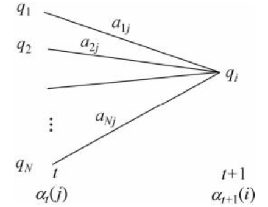
继续一步，由于观测状态 ot+1 只依赖于 t+1 时刻隐藏状态 qi , 这样 [∑i=1Nαt(j)aji]bi(ot+1) 就是在时刻 t+1 观测到 o1,o2,...ot,ot+1 ，并且时刻 t+1 隐藏状态为 qi 的概率。
而这个概率，恰恰就是时刻 t+1 对应的隐藏状态 i 的前向概率，这样我们得到了前向概率的递推关系式如下：
αt+1(i)=[j=1∑Nαt(j)aji]bi(ot+1)
我们的动态规划从时刻 1 开始，到时刻 T 结束，由于 αT(i) 表示在时刻 T 观测序列为 o1,o2,...oT ，并且时刻 T 隐藏状态为 qi 的概率，我们只要将所有隐藏状态对应的概率相加，即 ∑i=1NαT(i) 就得到了在时刻 T 观测序列为 o1,o2,...ot 的概率。
2.2 算法总结。
输入：HMM模型 λ=(A,B,Π) ，观测序列 O=(o1,o2,...oT)
输出：观测序列概率 P(O∣λ)
- 1) 计算时刻 1 的各个隐藏状态前向概率：α1(i)=Πibi(o1),i=1,2,...,N
- 2) 递推时刻 2,3,...,T 的前向概率： αt+1(i)=[∑j=1Nαt(j)aji]bi(ot+1),i=1,2,...,N
- 3) 计算最终结果：P(O∣λ)=∑i=1NαT(i)
从递推公式可以看出，我们的算法时间复杂度是 O(TN2) ，比暴力解法的时间复杂度 O(TNT) 少了几个数量级。
3 HMM前向算法求解实例
这里我们用前面盒子与球的例子来显示前向概率的计算。
我们的观察集合是:
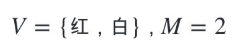
我们的状态集合是：
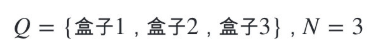
而观察序列和状态序列的长度为3.
初始状态分布为：
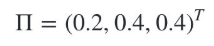
状态转移概率分布矩阵为：
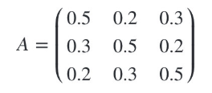
观测状态概率矩阵为：
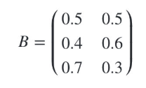
球的颜色的观测序列:
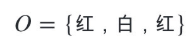
按照我们上一节的前向算法。首先计算时刻 1 三个状态的前向概率：
时刻 1 是红色球，
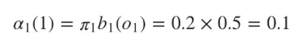
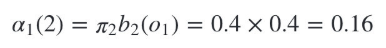
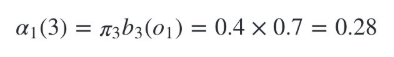
现在我们可以开始递推了，首先递推时刻 2 三个状态的前向概率：
时刻 2 是白色球，
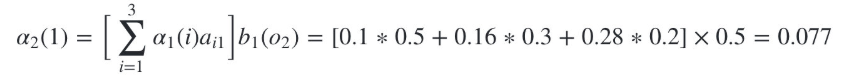
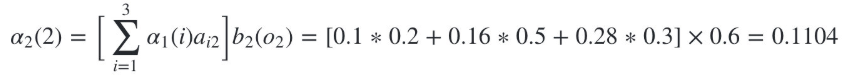
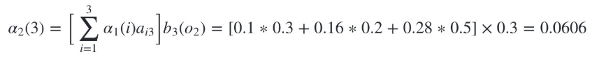
继续递推，现在我们递推时刻 3 三个状态的前向概率：
时刻 3 是红色球，
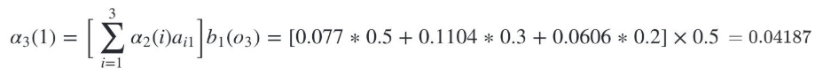
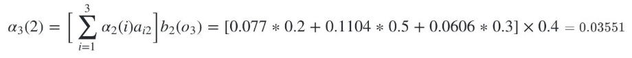
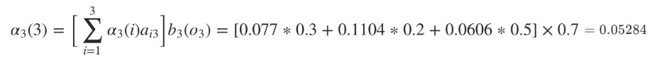
最终我们求出观测序列： O=红, 白, 红 的概率为：
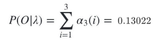
4 用后向算法求HMM观测序列的概率
4.1 流程梳理
熟悉了用前向算法求HMM观测序列的概率，现在我们再来看看怎么用后向算法求HMM观测序列的概率。
后向算法和前向算法非常类似，都是用的动态规划，唯一的区别是选择的局部状态不同，后向算法用的是“后向概率”。
4.2 后向算法流程
以下是后向算法的流程,注意下和前向算法的相同点和不同点：
- 输入：HMM模型 λ=(A,B,Π) ，观测序列 O=(o1,o2,...oT)
- 输出：观测序列概率 P(O∣λ)
- 初始化时刻 T 的各个隐藏状态后向概率： βT(i)=1,i=1,2,...,N
- 递推时刻 T−1,T−2,...,1 的后向概率： βt(i)=∑j=1Naijbj(ot+1)βt+1(j).i=1,2,...,N
- 计算最终结果： P(O∣λ)=∑i=1NΠibi(o1)βi(i)
此时我们的算法时间复杂度仍然是 O(TN2)
5 小结
前向算法求HMM观测序列
- 输入：HMM模型 λ=(A,B,Π) ，观测序列 O=(o1,o2,...oT)
- 输出：观测序列概率 P(O∣λ)
- 1) 计算时刻 1 的各个隐藏状态前向概率：α1(i)=Πibi(o1),i=1,2,...,N
- 2) 递推时刻 2,3,...,T 时刻的前向概率： αt+1(i)=[∑j=1Nαt(j)aji]bi(ot+1),i=1,2,...,N
- 3) 计算最终结果： P(O∣λ)=∑i=1NαT(i)
后向算法求HMM观测序列
- 输入：HMM模型 λ=(A,B,Π) ，观测序列 O=(o1,o2,...oT)
- 输出：观测序列概率 P(O∣λ)
- 初始化时刻 T 的各个隐藏状态后向概率： βT(i)=1,i=1,2,...,N
- 递推时刻 T−1,...,1 时刻的后向概率： βt(i)=∑j=1Naijbj(ot+1)βt+1(j).i=1,2,...,N
- 计算最终结果： P(O∣λ)=∑i=1NΠibi(o1)βi(i)